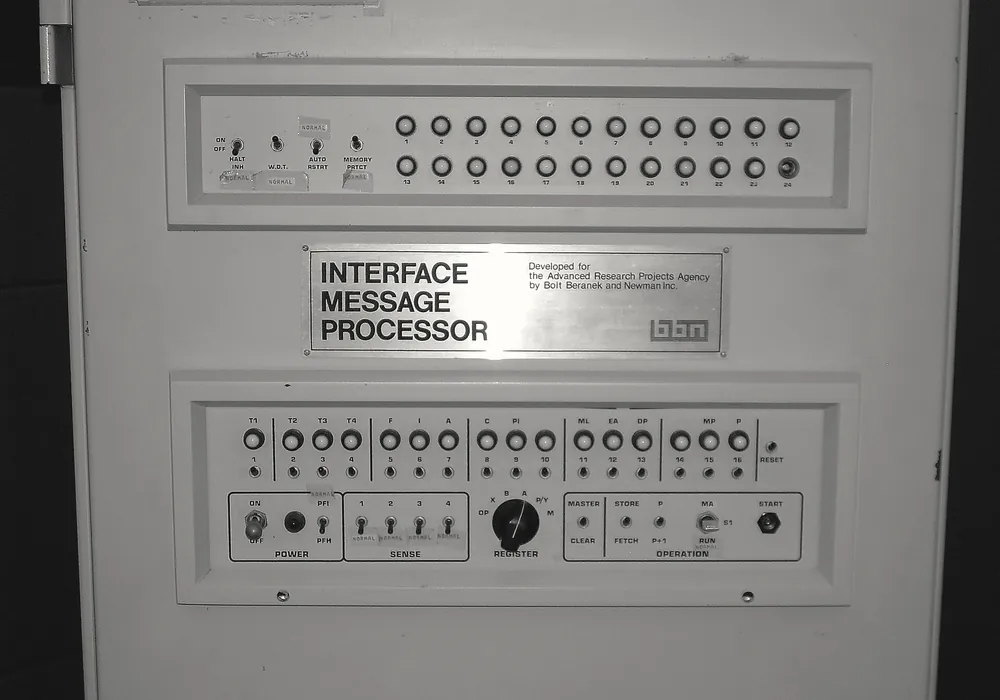
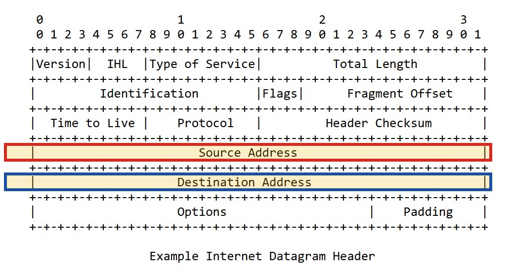
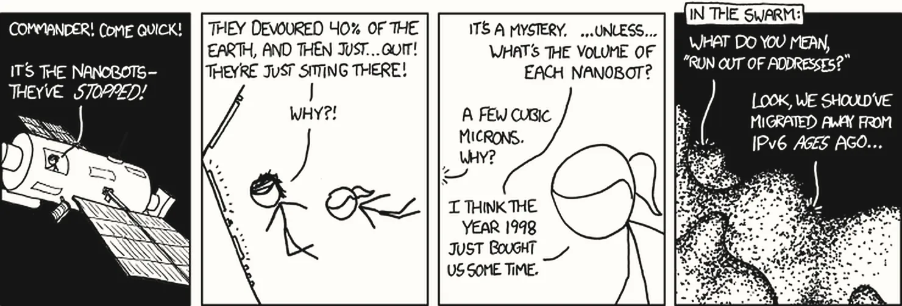

Phụ lục trả lời một câu hỏi nảy ra từ tab Địa chỉ IP của Bài 01: vì sao lại có những dải địa chỉ không được ra Internet, và vì sao máy ở nhà không ai gọi tới được? Câu trả lời bắt đầu từ một quyết định thiết kế năm 1981.
1981: một mạng nghiên cứu cần địa chỉ

Trước năm 1981, vấn đề của những người xây mạng là có quá nhiều kiểu mạng không nói chuyện được với nhau; địa chỉ khi ấy còn chưa thiếu. Mạng chính khi ấy là ARPANET, một mạng nghiên cứu nối vài trăm máy tính của các trường đại học, phòng thí nghiệm và Bộ Quốc phòng Mỹ. Muốn nối các mạng khác nhau thành một "mạng của các mạng", cần một cách đánh địa chỉ chung cho mọi máy, bất kể nó nằm trong mạng nào. Lời giải là giao thức IP, và phiên bản được chuẩn hoá vào tháng 9 năm 1981 trong văn bản RFC 791 chính là IPv4, thứ ta vẫn dùng hôm nay.
Những người thiết kế chọn độ dài 32 bit cho một địa chỉ. Một địa chỉ 32 bit được viết thành bốn nhóm 8 bit, mỗi nhóm đổi sang một số thập phân từ 0 tới 255 và ngăn cách bằng dấu chấm. Tổng số địa chỉ mà 32 bit tạo ra được là:
2³² = 4.294.967.296 ≈ 4,3 tỷ địa chỉ
192 .168 .10 .38
11000000.10101000.00001010.00100110 ← 32 bit, chia 4 nhóm 8 bit
Năm 1981, 4,3 tỷ địa chỉ nghe như vô hạn. Dân số thế giới khi ấy khoảng 4,5 tỷ người, gần như không ai sở hữu máy tính, và một máy tính to bằng cái tủ, do cả một đội kỹ sư vận hành. Với những gì người ta biết lúc đó, 32 bit là một lựa chọn hợp lý. Lựa chọn ấy dựa trên giả định rằng 4,3 tỷ địa chỉ là đủ, và về sau giả định đó không còn đúng.
Cách chia theo lớp làm địa chỉ cạn nhanh hơn
Cách chia con số 4,3 tỷ đó cho các tổ chức làm vấn đề nặng thêm. Ban đầu, không gian địa chỉ được chia theo lớp: vài bit đầu của địa chỉ quyết định nó thuộc lớp nào, và lớp quyết định luôn kích thước khối được cấp. Không có kích thước nào nằm giữa các lớp.
| Lớp | Bit đầu | Số khối | Địa chỉ mỗi khối | Phần của toàn bộ không gian |
|---|---|---|---|---|
| A | 0 | 128 | 16.777.216 | một nửa |
| B | 10 | 16.384 | 65.536 | một phần tư |
| C | 110 | 2.097.152 | 256 | một phần tám |
Bước nhảy 256 lần giữa các cỡ khối là nguồn gốc của sự lãng phí. Một tổ chức cần 300 địa chỉ thì khối lớp C với 256 địa chỉ không đủ, nên phải nhận một khối lớp B với 65.536 địa chỉ, và bỏ không hơn 99% số đó. Ở cực trên, một số trường đại học, tập đoàn và cơ quan được cấp nguyên một khối lớp A, tức hơn 16 triệu địa chỉ cho một tổ chức. Sổ đăng ký của IANA, tổ chức quản lý số hiệu của Internet, đến nay vẫn còn dấu vết của thời kỳ này: nhiều khối lớn ghi tên một tổ chức duy nhất.
IPv4 giải quyết được bài toán của năm 1981: một cách đánh địa chỉ chung cho mọi mạng. Nhưng nó để lại hai vấn đề cho thập niên sau: tổng số địa chỉ có hạn, và cách chia theo lớp phung phí phần địa chỉ có hạn đó.
Mười năm sau RFC 791, hai vấn đề ở tab trước bắt đầu thành khủng hoảng. Lời giải đầu tiên giữ nguyên IPv4 và vá nó: chia địa chỉ khéo hơn.
Đầu thập niên 1990: hai cuộc khủng hoảng cùng tới
World Wide Web ra đời năm 1991, và Internet bắt đầu bùng nổ thương mại. Tới đầu thập niên 1990, cộng đồng kỹ thuật nhận ra hai cuộc khủng hoảng đang tới cùng lúc. Thứ nhất, các khối lớp B, cỡ "vừa vặn" nhất cho doanh nghiệp, đang cạn rất nhanh. Thứ hai, danh sách đường đi mà mỗi router lớn của Internet phải nhớ đang phình ra, vì mỗi khối lớp C được cấp là thêm một dòng riêng trong danh sách đó. Bộ nhớ của router có hạn, nên danh sách đường đi không thể phình mãi.
Khoảng năm 1992, IETF, tổ chức soạn các chuẩn của Internet, bắt đầu thiết kế một thế hệ địa chỉ mới; đó sẽ là IPv6 ở tab cuối. Nhưng một thế hệ mới cần nhiều năm, trong khi khủng hoảng đang tới ngay. Vì vậy người ta làm song song hai việc: thiết kế cái mới, và vá cái cũ.
CIDR (1993): ranh giới ở bất kỳ bit nào
CIDR (Classless Inter-Domain Routing), chuẩn hoá năm 1993 trong RFC 1519 và
nay được thay bằng RFC 4632, làm một việc nghe thì đơn giản: bỏ hệ thống lớp. Thay vì để vài bit
đầu quyết định cỡ khối, CIDR cho phép ranh giới giữa phần "mạng" và phần "máy" nằm ở bất kỳ bit nào, và
ghi vị trí đó bằng một con số sau dấu gạch chéo. Đó chính là ký hiệu /8 mà Bài 01 đã gặp ở
sổ đăng ký của IANA.
192.168.1.0/24 ← 24 bit đầu cố định, 8 bit cuối tự do → 256 địa chỉ
10.0.0.0/8 ← 8 bit đầu cố định → 16,7 triệu địa chỉ
số địa chỉ trong khối /n = 2^(32 − n)Con số sau dấu gạch chéo đếm bit, không liên quan gì tới các con số trong địa chỉ. Dải
loopback 127.0.0.0/8 vì vậy không chứa 127⁴ địa chỉ như rất dễ đoán, mà chứa
2²⁴, khoảng 16,7 triệu địa chỉ, dù mặc định máy chỉ dùng đúng một địa chỉ trong đó là
127.0.0.1.
CIDR giải quyết cả hai cuộc khủng hoảng. Tổ chức cần 300 địa chỉ giờ nhận một khối /23
với 512 địa chỉ thay vì 65.536, nên địa chỉ không còn bị phung phí theo bước nhảy 256 lần. Và nhiều khối
nhỏ nằm liền nhau có thể được gộp thành một khối lớn, chỉ chiếm một dòng trong danh sách đường đi của
router, nên danh sách ấy ngừng phình to.
- Prefix tiền tố mạng
- Phần bit cố định ở đầu địa chỉ, chung cho mọi máy trong một khối. Trong
192.168.1.0/24, prefix là 24 bit đầu. - Subnet mask mặt nạ mạng con
- Cách viết cũ của cùng thông tin đó:
/24tương đương255.255.255.0. Các công cụ mạng vẫn dùng cả hai cách viết.
CIDR chữa được sự phung phí và sự phình to của danh sách đường đi. Nhưng nó chỉ chia khéo hơn; tổng số vẫn là 4,3 tỷ. Internet vẫn lớn nhanh hơn thế, nên vẫn cần một cách để nhiều máy dùng chung ít địa chỉ.
CIDR chia khéo hơn, nhưng không tạo thêm được địa chỉ nào. Lời giải thứ hai đi thẳng vào tổng số: cho cả một mạng dùng chung một địa chỉ công khai.
NAT (1994): cả một mạng, một địa chỉ công khai
NAT (Network Address Translation), mô tả lần đầu trong RFC 1631 năm 1994 và
sau đó trong RFC 3022, cho phép cả một mạng dùng chung một địa chỉ công khai. Nó đi kèm
với ba dải mạng riêng mà RFC 1918 dành ra, tức ba dải Bài 01 đã gặp: 10.0.0.0/8,
172.16.0.0/12 và 192.168.0.0/16. Mọi mạng nội bộ trên thế giới đều được dùng lại
các dải này, chính vì chúng không bao giờ xuất hiện trên Internet. Đó là câu trả lời cho phần đầu của câu
hỏi phụ lục: dải mạng riêng tồn tại để hàng triệu mạng cùng dùng lại một nhóm địa chỉ nhỏ.

192.168.x.x, còn router đứng ra đại diện bằng một địa chỉ duy nhất phía nhà mạng. ┌──── nhà của bạn ──────────────┐
│ │
│ laptop 192.168.10.38 │ ← mạng riêng,
│ điện thoại 192.168.10.51 │ không ra Internet
│ TV 192.168.10.77 │
│ │ │
└──────────────────┼────────────┘
│
router (NAT)
│
203.0.113.7 ← công khai, một địa chỉ
│ cả nhà dùng chung
~ Internet ~203.0.113.7 thuộc dải mà RFC 5737 dành riêng cho tài liệu, nên không trỏ
tới mạng thật của ai.Cơ chế cụ thể như sau. Khi laptop gửi một gói tin ra Internet, router thay địa chỉ nguồn (mạng riêng) của gói tin bằng địa chỉ công khai của chính nó, đồng thời thay port nguồn bằng một port do router tự chọn, rồi ghi cặp thay thế đó vào một bảng dịch địa chỉ. Khi gói trả lời quay về địa chỉ công khai và port đó, router tra bảng, đổi địa chỉ đích lại cho đúng, và chuyển gói tin cho đúng laptop, dù điện thoại cũng đang nói chuyện với cùng một server.
192.168.10.38 : 55289 ⟷ 203.0.113.7 : 61204 → 104.20.23.154:443
192.168.10.51 : 49802 ⟷ 203.0.113.7 : 61205 → 104.20.23.154:443Hình 4 nối thẳng về tab Kết nối TCP của Bài 01. Port tạm 55289 mà hệ điều hành cấp cho
curl, một chi tiết trông như vụn vặt trong bộ bốn, chính là thứ giúp router phân biệt các kết
nối từ những máy khác nhau trong nhà. Không có port trong bảng dịch, router không biết trả gói tin về cho
ai.
NAT hiệu quả tới mức nó đẩy lùi khủng hoảng IPv4 thêm hai thập kỷ. Nhưng nó chỉ trì hoãn chứ không xoá được giới hạn. Ngày 3 tháng 2 năm 2011, IANA phát đi những khối địa chỉ IPv4 trống cuối cùng cho các cơ quan quản lý địa chỉ khu vực; vài tháng sau, APNIC, cơ quan phụ trách khu vực châu Á – Thái Bình Dương, chuyển sang cấp phát nhỏ giọt khối cuối cùng của mình.
NAT giải quyết được tổng số địa chỉ, thứ CIDR không giải được, bằng cách cho cả một mạng dùng chung một địa chỉ công khai. Nhưng NAT có một cái giá, và cái giá đó chính là lý do server không đặt được ở nhà.
NAT giúp IPv4 dùng tiếp được, nhưng có một cái giá. Cái giá ấy chính là phần sau của câu hỏi phụ lục: vì sao một máy ở nhà không ai trên Internet gọi tới được.
Cái giá của NAT: kết nối chỉ được khởi tạo từ bên trong
Internet ban đầu được xây theo một nguyên tắc: mọi máy đều có thể gọi thẳng mọi máy. NAT phá vỡ nguyên tắc đó. Bảng dịch địa chỉ của router chỉ được ghi khi có một kết nối đi ra; một gói tin từ Internet đi vào mà không khớp dòng nào trong bảng thì router không có cách nào biết nó dành cho thiết bị nào trong nhà, nên vứt bỏ nó. Kết quả là một sự bất đối xứng mà người dùng ngày nay coi là hiển nhiên, dù nó chưa bao giờ là thiết kế ban đầu.
Máy bạn gọi ra Internet → được: router ghi bảng và trả lời về
Internet gọi vào máy bạn → không được: router không biết
gói tin này dành cho máy nào trong nhàĐây là câu trả lời đầy đủ cho vì sao server không đặt trên laptop ở nhà. Một laptop bình thường chạy
được Spring Boot và PostgreSQL, nên vấn đề không nằm ở sức máy; vấn đề là laptop không có địa chỉ nào mà
Internet gọi tới được. Địa chỉ 192.168.10.38 chỉ có nghĩa trong nhà, còn địa chỉ công khai thuộc về router, và router
vứt mọi kết nối đi vào không có trong bảng. Muốn mở đường vào, phải ghi tay một dòng cố định vào bảng của
router, gọi là port forwarding.
Năm 1984, Saltzer, Reed và Clark công bố bài báo End-to-End Arguments in System Design, lập luận rằng mạng ở giữa nên càng đơn giản càng tốt, chỉ chuyển gói tin, còn mọi xử lý nên nằm ở hai đầu. Internet được xây theo tinh thần đó. NAT đặt một thiết bị ghi nhớ trạng thái từng kết nối vào giữa, và từ đó quyết định kết nối nào được phép tồn tại. Vì vậy nhiều kỹ sư mạng coi NAT là một thay đổi về kiến trúc của Internet.
Tầng NAT thứ hai: khi nhà mạng cũng NAT
Khi địa chỉ IPv4 công khai cạn dần, nhiều nhà mạng không còn đủ địa chỉ để cấp cho mỗi router gia
đình một địa chỉ riêng. Họ đặt thêm một tầng NAT nữa ở phía nhà mạng, gọi là Carrier-Grade
NAT (CGNAT): router nhà bạn chỉ nhận một địa chỉ gần như công khai, và hàng trăm khách hàng dùng
chung một địa chỉ công khai thật ở phía sau. RFC 6598 dành riêng dải 100.64.0.0/10 cho khoảng
giữa này. Hệ quả là ngay cả port forwarding trên router nhà bạn cũng không có tác dụng, vì gói tin từ Internet đã bị
chặn ở tầng NAT của nhà mạng, trước khi tới được router của bạn.
Cái giá của NAT là máy trong mạng riêng gọi ra Internet được, nhưng Internet không gọi vào được, và CGNAT làm điều đó chặt thêm một tầng. Server vì vậy phải đặt ở nơi có địa chỉ công khai, như trung tâm dữ liệu. Muốn trả lại cho mọi máy một địa chỉ công khai, cần nhiều địa chỉ hơn hẳn 4,3 tỷ.
Trong khi CIDR và NAT vá IPv4, IETF thiết kế lời giải gốc từ năm 1992: một thế hệ địa chỉ đủ lớn để không cần NAT. Lời giải ấy đã có từ lâu; điều cần giải thích là vì sao nó phổ cập chậm tới vậy.
IPv6: 128 bit, đủ cho mọi máy
Đặc tả IPv6 đầu tiên xuất hiện năm 1995 (RFC 1883), được sửa lại thành RFC 2460 năm 1998, và tới năm 2017 mới được nâng lên thành chuẩn Internet chính thức (RFC 8200). Ý đồ chính của nó là mở rộng không gian địa chỉ tới mức không cần NAT nữa, tức trả lại khả năng mọi máy gọi thẳng mọi máy.
| IPv4 | IPv6 | |
|---|---|---|
| Độ dài địa chỉ | 32 bit | 128 bit |
| Số địa chỉ | 4,3 tỷ | khoảng 3,4 × 10³⁸ |
| Cách viết | thập phân, 4 nhóm | thập lục phân, 8 nhóm |
| Ví dụ | 192.168.1.1 | 2606:4700:10::ac42:93f3 |
| Loopback | 127.0.0.1 | ::1 |
| NAT | gần như bắt buộc | không cần trong thiết kế |
Con số 3,4 × 10³⁸ lớn tới mức khó hình dung; Ảnh 4 thử hình dung nó.


Một địa chỉ IPv6 gồm 8 nhóm, mỗi nhóm 16 bit viết bằng 4 chữ số thập lục phân. Viết đầy đủ thì rất dài,
nên chuẩn cho phép hai cách rút gọn: bỏ các số 0 ở đầu mỗi nhóm, và thay một chuỗi liên tiếp các
nhóm toàn số 0 bằng hai dấu hai chấm. Chỉ được thay một lần, vì người đọc phải tự suy ra
:: thay cho bao nhiêu nhóm bằng cách lấy 8 trừ số nhóm còn lại.
Đầy đủ: 2606:4700:0010:0000:0000:0000:ac42:93f3
Rút gọn: 2606:4700:10::ac42:93f3
::1 = 0000:0000:0000:0000:0000:0000:0000:0001 ← loopback IPv6Vì sao gần 30 năm IPv6 vẫn chưa thay được IPv4
Lý do phổ cập chậm nằm ở kinh tế nhiều hơn ở kỹ thuật. Thứ nhất, IPv6 không tương thích ngược: máy chỉ có IPv6 không nói chuyện được với máy chỉ có IPv4, nên không thể nâng cấp dần tại chỗ, mà phải chạy song song cả hai, gọi là dual-stack, tốn gấp đôi công vận hành mà không được lợi gì ngay. Thứ hai, NAT "đủ dùng": người dùng cuối chưa thấy khủng hoảng nào, nên không ai trả tiền để giải quyết nó. Thứ ba là một vòng luẩn quẩn: nhà mạng không triển khai vì chưa có nội dung trên IPv6, còn nội dung không lên IPv6 vì chưa có người dùng. Vòng ấy đang bị phá dần bởi mạng di động: hàng tỷ điện thoại không thể đều có địa chỉ IPv4 công khai, nên nhiều nhà mạng di động triển khai IPv6 trước. Google công bố tỉ lệ người dùng truy cập Google qua IPv6; con số đã vượt 40% từ vài năm trước, và bạn có thể xem số mới nhất trong nguồn đọc thêm.
Output của lab Bài 00 cho thấy trạng thái lưng chừng đó trên chính một máy thật:
* IPv6: 2606:4700:10::ac42:93f3 ← example.com có IPv6
* IPv4: 104.20.23.154 ← và vẫn giữ IPv4 (dual-stack)
* Trying [2606:4700:10::ac42:93f3]:443... ← curl thử IPv6 trước
* Trying 104.20.23.154:443... ← rồi thử IPv4
* Established connection ... 104.20.23.154 ← kết nối qua IPv4curl -v ở lab Bài 00, chạy trên máy tôi ngày 24/09/2026, có
chú thích bên phải.example.com có cả IPv6 lẫn IPv4, và curl thử IPv6 trước. Nhưng kết nối cuối
cùng vẫn đi bằng IPv4. Điều đó gợi ý, nhưng chưa chứng minh, rằng mạng gia đình ấy chưa có đường IPv6 ra
Internet trong khi website đã có địa chỉ IPv6. Địa chỉ link-local fe80::… của router mà
nslookup in ra không thêm bằng chứng nào, vì mọi giao diện mạng có IPv6 đều mang một địa chỉ
fe80, kể cả ở mạng có IPv6 đầy đủ.
localhost ra hai địa chỉ
Thời kỳ dual-stack để lại một cái bẫy liên quan trực tiếp tới Bài 01. Trên nhiều hệ thống hiện đại,
tên localhost phân giải ra hai địa chỉ, ::1 trước rồi tới 127.0.0.1.
Nếu một database chỉ listen 127.0.0.1, còn ứng dụng kết nối tới localhost và thử
::1 trước, ứng dụng có thể nhận lỗi refused dù database đang chạy hoàn toàn bình
thường: database chỉ không listen trên địa chỉ mà ứng dụng gọi tới, tức thiếu điều kiện có chương trình
listen đúng địa chỉ ở Bài 01. Cơ chế
này không phải lời giải cho con số 2,155 giây ở lab Bài 01, vì lệnh đó dùng -4 và gõ thẳng
127.0.0.1.
IPv6 là lời giải gốc cho tổng số địa chỉ: 128 bit đủ để mọi máy có địa chỉ công khai mà không cần NAT. Nhưng vì không tương thích ngược và vì NAT vẫn đủ dùng, Internet hôm nay chạy song song hai giao thức, và thời kỳ đó để lại những dấu vết người vận hành sẽ gặp.
Bốn công nghệ trên để lại dấu vết trong công việc hằng ngày, và thêm một tầng cho câu trả lời của Bài 01.
Bốn dấu vết còn lại hôm nay
| Dấu vết | Sinh ra từ | Gặp lại ở |
|---|---|---|
| Máy ở nhà không ai gọi tới được; server phải có địa chỉ công khai | NAT, CGNAT | Bài 01, Bài 18 |
Ký hiệu /8, /24 trong sổ đăng ký và trong luật firewall | CIDR | Bài 01, Bài 17 |
| Tên miền có hai loại bản ghi địa chỉ: một cho IPv4, một cho IPv6 | dual-stack | Bài 20 |
| Firewall giữ hai bộ luật riêng cho IPv4 và IPv6 | dual-stack | Bài 17 |
Firewall trên Linux giữ hai bộ luật riêng cho IPv4 và IPv6. Chặn kỹ bộ này mà quên bộ kia thì máy chủ vẫn mở ra Internet qua IPv6 mà người quản trị không biết. Lộ trình kiểm tra đúng chỗ này khi đi một vòng máy chủ ở Bài 17.
Nối về câu hỏi của Bài 01
Bài 01 hỏi vì sao người khác không gọi được app của bạn. Lịch sử này thêm một tầng cho câu trả lời: ngoài ba điều kiện trên một máy, còn một điều kiện ở cấp toàn Internet. Đồng nghiệp cùng mạng WiFi gọi được tới địa chỉ mạng riêng của bạn, vì hai người ở cùng một mạng. Một người ngoài Internet thì không bao giờ gọi được, vì địa chỉ mạng riêng không ra Internet, và router làm NAT vứt mọi kết nối đi vào. Đó là lý do các module sau của lộ trình đưa ứng dụng lên một máy chủ có địa chỉ công khai, rồi gắn cho nó một tên miền.
Tự kiểm tra
Bấm vào từng dòng khi giải thích được mà không nhìn lại.
- Kể được bốn công nghệ theo thứ tự, và mỗi cái giải quyết vấn đề gì của cái trước
- Tính được số địa chỉ của IPv4 và của một khối
/24,/23bằng công thức 2^(32 − n) - Giải thích được vì sao chia theo lớp làm IPv4 cạn nhanh hơn
- Vẽ lại được bảng dịch địa chỉ của NAT và giải thích vai trò của port trong đó
- Giải thích được vì sao NAT khiến server không đặt được trên laptop ở nhà
- Rút gọn và viết đầy đủ được một địa chỉ IPv6
- Kể được ba lý do IPv6 phổ cập chậm
Nguồn đọc thêm
- RFC 791 — Internet Protocol (IPv4), 1981. rfc-editor.org/rfc/rfc791
- RFC 4632 — Classless Inter-domain Routing (CIDR), bản thay thế cho RFC 1519 (1993). rfc-editor.org/rfc/rfc4632
- RFC 1918 — Address Allocation for Private Internets. rfc-editor.org/rfc/rfc1918
- RFC 1631 và RFC 3022 — NAT, mô tả ban đầu (1994) và "Traditional NAT" (2001). rfc-editor.org/rfc/rfc1631 · rfc3022
- RFC 6598 — dải
100.64.0.0/10dùng chung cho Carrier-Grade NAT. rfc-editor.org/rfc/rfc6598 - RFC 8200 — Internet Protocol, Version 6 (IPv6) Specification. rfc-editor.org/rfc/rfc8200
- RFC 4291 — IP Version 6 Addressing Architecture. rfc-editor.org/rfc/rfc4291
- RFC 5737 — IPv4 Address Blocks Reserved for Documentation (dải chứa
203.0.113.7). rfc-editor.org/rfc/rfc5737 - IANA — sổ đăng ký các khối IPv4
/8, nơi còn thấy dấu vết cấp phát theo lớp. iana.org/assignments/ipv4-address-space - Google — thống kê tỉ lệ người dùng truy cập qua IPv6. google.com/intl/en/ipv6/statistics.html
- J. H. Saltzer, D. P. Reed, D. D. Clark — End-to-End Arguments in System Design, ACM Transactions on Computer Systems, 1984.
Nguồn ảnh
Ảnh chụp lấy từ Wikimedia Commons, dùng theo giấy phép ghi ở từng dòng; ảnh đã được chuyển sang đen trắng và cắt khung cho hợp bố cục trang; ảnh chụp đồ vật còn được tách khỏi nền cũ để đặt thẳng lên nền trang. Ảnh chụp màn hình do tôi tự chụp; các khung màu là phần đánh dấu thêm vào. Truyện tranh của xkcd dùng theo giấy phép phi thương mại ghi ở từng dòng; đã phóng to và chuyển sang đen trắng.
- Ảnh 1Interface Message Processor của ARPANET — Carlo Nardone, Wikimedia Commons, CC BY-SA 2.0.
- Ảnh 2Khuôn phần đầu gói tin IPv4, RFC 791 — chụp màn hình rfc-editor.org, 30/09/2026.
- Ảnh 3Router gia đình Linksys WRT54G — Evan-Amos, Wikimedia Commons, public domain.
- Ảnh 4Nanobots — Randall Munroe, xkcd.com, CC BY-NC 2.5.
.jpg){kind=link}